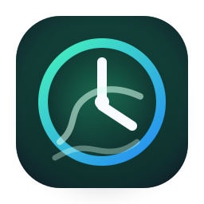

Tray-first timer
Click the tray icon, adjust the timer, and hide it again. The app stays out of the way.

Smoke BreakWindows tray timer · custom audio · daily stats
Smoke Break sits in your Windows tray, counts down quietly, then opens a compact popover with your selected audio reminder and simple choices: took break, skipped, or delay.
Break timer ended.
Built for quick use
Click the tray icon, adjust the timer, and hide it again. The app stays out of the way.
Pick your own MP3 or WAV reminder. Smooth fade-in prevents the audio from starting abruptly.
When the timer ends, choose what happened: took break, skipped, or delayed the reminder.
Track simple daily counts without accounts, cloud sync, analytics, or network features.
Local by default
Settings and daily stats are stored as local JSON files. The app is designed as a lightweight desktop utility, not an online service.
data/settings.json
assets/icon.ico
app/audio_controller.py
app/timer_controller.pyWindows app
Add your GitHub Releases link to the button below when your first `.exe` build is ready.